How to perform a basic vulnerability scan using Nessus
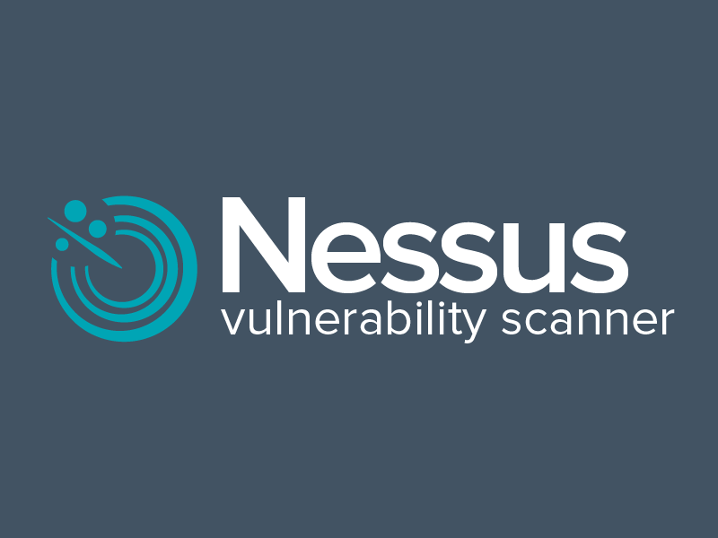
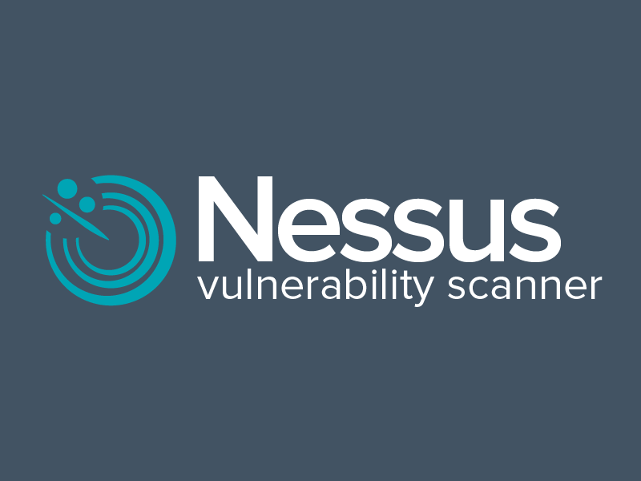
So what is Nessus anyways?
Nessus is an open-source vulnerability scanner that can scan entire networks assets including: virtual machines, hosts, file and web servers, and cloud applications. By the use of plugins, it can detect if you system is missing an important security patch or vulnerability, check if you have malware installed or tell you if you have any deprecated software that could be exploited.
-
If you're studying for your Security+ exam this is a great way to get some
practical experience working with a vulnerability scanner.
So download the app, and what are
are you waiting for?!
-
In this case, I’ll be using a virtual machine to install Nessus and use it to perform a scan,
find a vulnerability and correct the issue. Click on this link to find out how to install
Kali Linux
- The installation process for Nessus is a little complex, but here is an excellent walkthrough by David Bombal on how to install Nessus using Kali Linux.
Here is what you'll see
- How to start your first scan.
- How to navigate the results.
- How to find docs on fixing vulnerability.
- Fixing the vulnerability with an example.
1. How to start your first scan.
Login the Nessus application to start you first scan, but for Nessus to work you have to go into a terminal and type: sudo systemctl start nessusd
Once you are logged in and ready to start, go ahead and click on “new scan”. 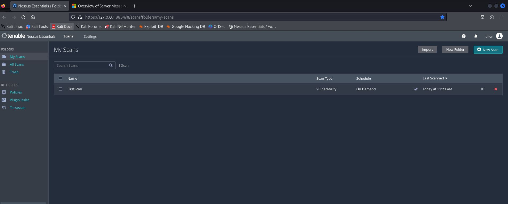
This will prompt you to enter information about what kind of scan you want (there are numerous different types of scans like: basic, advanced, specific types of ransomware and other specific vulnerabilities. If you are just starting out and looking to test the application, then pick “ Basic Network Scan”
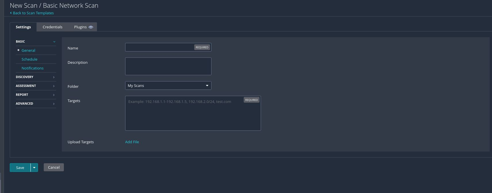 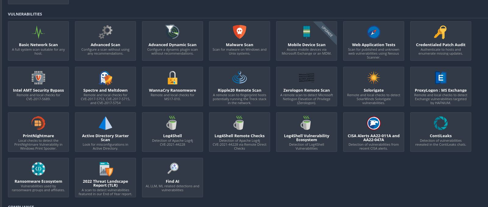
After you click on “Basic Network Scan” you will be asked to input some basic settings and info about your scan. Enter all the necessary information like, name of the scan, host, website, or entire network.
You can also enter more advance information, for example: you can set this to a regularly scheduled scan, send notifications to your email, and set reporting and output options. Once you are happy with the settings, click on “save” and then “scan”. This might take a while depending on how large your network or application is.

Once you are happy with the settings, click on “save” and then “scan”. This might take a while depending on how large your network or application is.
2. How to navigate the results.
Once the scan is done, below is a screenshot showing all the local hosts on your system and a bar graph showing what amount of critical, high, medium, low, or informational vulnerabilities you have for each host. 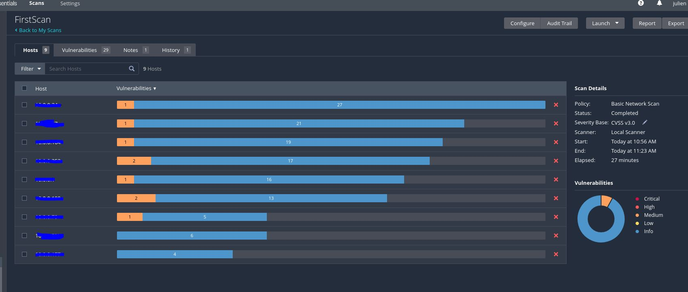After clicking on the first host, it will show you what vulnerabilities that hosts currently has. On the left, it shows more information, such as hosts details, such as your DNS hostname and your IP. 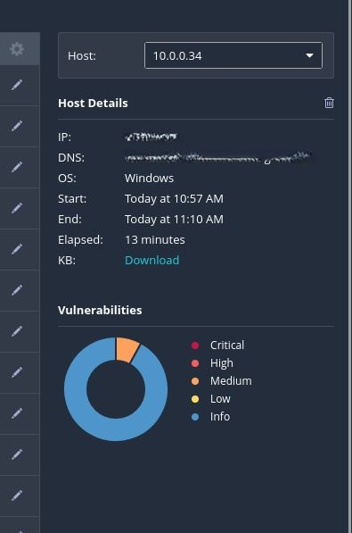
After clicking on the vulnerability, it will provide you with tons of information about what it is and how to fix it. 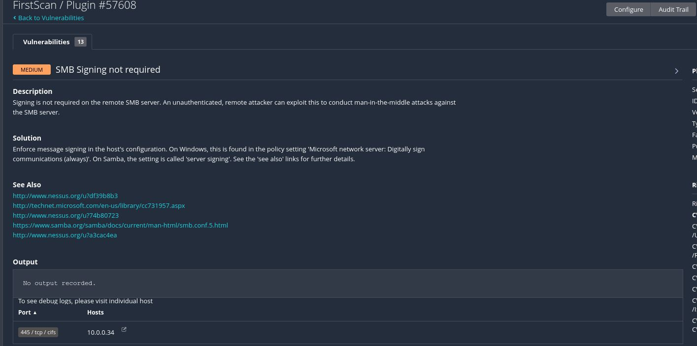
The first one is an SMB vulnerability that has a “signing not required” setting. SMB is called the Server Message Block protocol. This service acts like a client-server application and send to and request information on a network and also remote networks. Once common example is if you have a network printer and wish to send information to that node, it can use SMB to send that data. Earlier versions of SMB were very unsecure and not encrypted meaning that if someone was hiding on your network, the could intercept this data and use it as a MITM (Man in the middle attack). Later versions of SMB required more encryption and digital signing. Digital signing provides non-repudiation, meaning that this confirms that the data was actually sent by the right person or application and not some “man in the middle” stealing or modifying your data.
In 2017, an unsecure version of SMB was vulnerable and an exploit was found and infected 230,000 computer accross 150 countries. This was called the WannaCry ransomware attack.
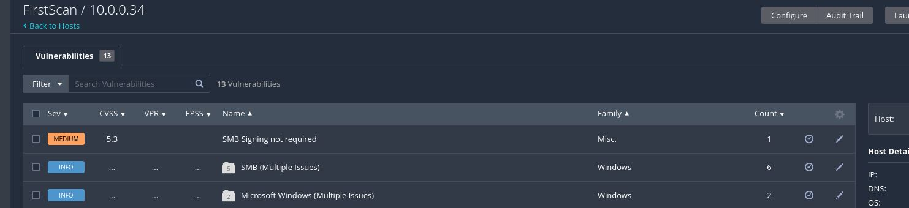3. How to find docs on fixing vulnerability.
If you are looking for more documentation on where to find a solution or a fix for this vulnerabuility, Nessus provides links for the issue.

4. Fixing the vulnerability with an example.
In order to fix this SMB vulnerability, I have to modify the settings for the SMB service on my host. You can modify the setting in your Group Policy Editor by typing: gpedit.msc in your run screen, but if you don’t have gpedit installed, you can also modify these settings in your Registry by searching for Regedit. In this case, I’m simply going to enter regedit and find the security settings for SMB and change the values to 1. 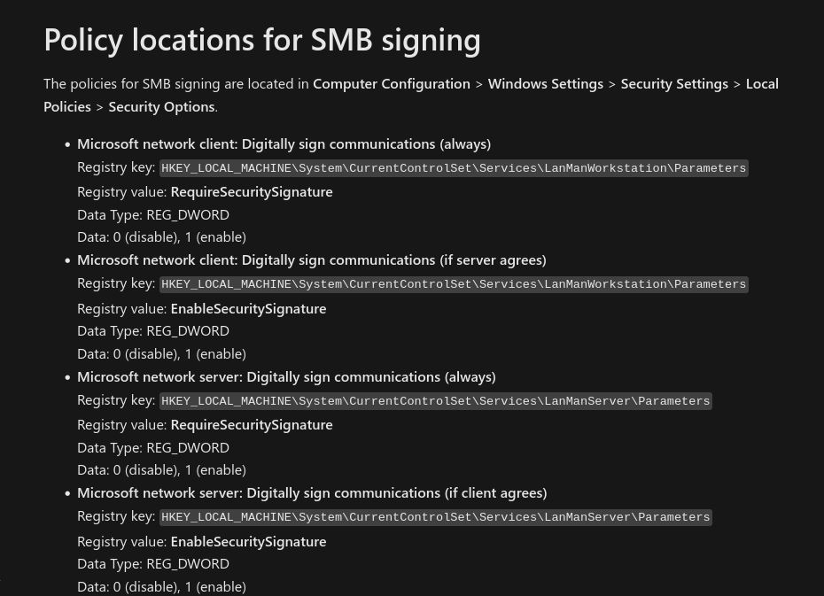
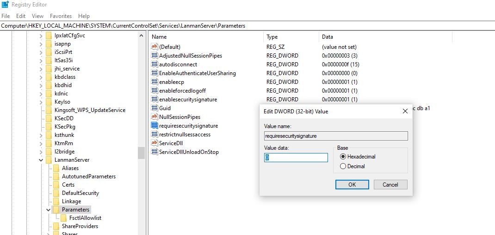